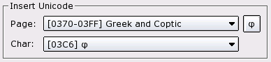

|
||
 |
||


Texts
CAD Toolbar:
Menu:
Draw - Text
Command:
text
Description:
Use this tool to create single line and multi line texts.
Procedure:
- Just after launching the tool, the text dialog is presented in which you can choose the font and enter the text you want to create (Figure 32).
{kind=link}
Figure 32: The text creation dialog.
- Choose the font name and attributes in the upper left area of the dialog (Figure 33). For a complete list of all available fonts, please refer to the appendix. In the height field, enter the height of the text in the unit of your drawing. To choose normal line spacing, click the checkbox "Default line spacing". You can increase or decrease the line spacing by disabling the checkbox and entering a value in the "Line spacing" box. The value entered is a factor relative to the default (1.0). Valid values range from 0.25 to 4.00. Values outside this range are allowed but break compatibility to other CAD programs such as AutoCAD.
Figure 33: Font selection.
- Choose the alignment of the text (Figure 34).
Figure 34: Text alignment.
- Enter the angle for the text (Figure 35). Normal horizontal texts have an angle of zero degrees.
Figure 35: Text angle.
- Enter the text you want to create in the large text box
(Figure 36). You can also use the icons above the box to
load texts, save texts you've already entered or to paste texts from the
clipboard.
To enter special symbols that are not available on your keyboard, you can use the combobox at the bottom left of the dialog (Figure 37). Simply choose a symbol from the list and it will be placed at the current cursor position in the text box.
If the symbol list doesn't contain the symbol you need, please use the comboboxes at the bottom right to choose any character from the unicode char set (Figure 38). Note that the font you've chosen might not contain the characters you insert. In that case the characters will be ignored.
To insert a unicode character, select the unicode page in the first combobox and choose the character from the second combobox. Now click the button at the right to insert the character at the current cursor position.
Figure 36: The text area where you can enter or load a text.
Figure 37: Insert special symbols using the Symbol combobox.

Figure 38: Insert any unicode characters with the unicode tools..
- Click "OK" to exit the text dialog.
- Use the mouse to specify the location of the text or enter a co-ordinate in the command line.
- Often, users need to create a number of similar texts. For that reason the text tool doesn't terminate after creating the first text entity. You can change the text and the text angle in the options toolbar and create other texts with similar settings.
- Right click or press Escape to stop the text tool.
Advanced Text Commands
Sometimes it's useful to put two texts on top of each other (e.g. for tolerances). There's a sepcial escape sequence you can type anywhere in the text to achieve that. For example the sequence "10\S+0.05\-0.05; Millimeter" would produce a tolerance symbol as shown in Figure 39.
Figure 39: Text produced by the string "10\S+0.05\-0.05; Millimeter".
|